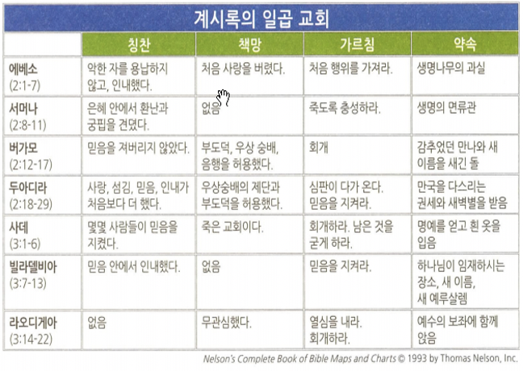

<!doctype html>
<html>
    <head>
        <meta charset="UTF-8">
        <meta name = "viewport" content = "width = device-width, initial-scale=1.0">
        <title>CF1 요한계시록</title>
        <link rel="stylesheet" type="text/css" href="../../../css/pages.css">
    </head>
</html>

<body>
    <header>
        <h3><a href = "../../../index.html">HAGUS <br> HARDWARE</a></h3> 
        <ul id="main_menu">
        </ul>

        <script src = "../../../MainMenu.js"></script>
    </header>

    <section class="section">
    <div id = "tag_menu">
    </div>

    <script src = "../../../TIL_tag_menu.js"></script>

    <div id = "tag_list">
        <div class="l_title"><a href = "../../../TIL.html">Class.</a></div><hr>
        <div class = "l_subtitle"><div class = "title"><a href = "../../../TIL.html"><strong>[CF1] 요한계시록</div><div id="date">2021.06.12</div></strong></a></div>
             <!--====content====-->
        <div class = "content"> 
<pre>

<span class = "h">개괄</span>
<strong>저자</strong> : 사도 요한
<strong>연대</strong> : 95-96년
<strong>장소</strong> : 밧모섬(Patmos)
<strong>수신</strong> : 에베소, 서머나, 버가모, 두아리라, 사데, 빌라델비아, 라오디게아
<strong>상황</strong> : 소아시아 지역에 있던 그리스도인들에게 닥친 박해
<strong>목적</strong> : 최후의 심판과 지상에 건설될 그리스도의 왕국을 묘사함으로써 그리스도인들이 신실하게 인내하도록 격려함
<strong>주제</strong> : 죽임당하고 부활하신 어린 양 예수님이 종말의 때에 왕과 심판 주로 다시 오신다.
<strong>핵심 구절</strong>
(계 1:7) 볼지어다 그가 구름을 타고 오시리라 각 사람의 눈이 그를 보겠고 그를 찌른 자들도 볼 것이요 땅에 있는 모든 족속이 그로 말미암아 애곡하리니 그러하리라 아멘

(계 19:11-16) 또 내가 하늘이 열린 것을 보니 보라 백마와 그것을 탄 자가 있으니 그 이름은 충신과 진실이라 그가 공의로 심판하며 싸우더라 그 눈은 불꽃 같고 그 머리에는 많은 관들이 있고 또 이름 쓴 것 하나가 있으니 자기밖에 아는 자가 없고 또 그가 피 뿌린 옷을 입었는데 그 이름은 하나님의 말씀이라 칭하더라. 하늘에 있는 군대들이 희고 깨끗한 세마포 옷을 입고 백마를 타고 그를 따르더라. 그의 입에서 예리한 검이 나오니 그것으로 만국을 치겠고 친히 그들을 철장으로 다스리며 또 친히 하나님 곧 전능하신 이의 맹렬한 진노의 포도주 틀을 밟겠고, 그 옷과 그 다리에 이름을 쓴 것이 있으니 만왕의 왕이요 만주의 주라 하였더라


<span class = "h">묵시의 의미</span>
묵시란, 이야기체 구조를 가진 계시적인 문학의 장르이다. 묵시 속에는 초월적인 존재가 인간에게 전해준 계시가 들어있다. 그 계시는 종말론적인 구원을 그리기 때문에, 시간을 초월했고, 또 다른 초월적인 세상을 포함하므로, 공간도 초월하는 하나의 초월적인 실재를 드러낸다.


칭찬이 없는 교회 : 라오디게아 교회
책망이 없는 교회 : 서머나, 빌라델비아


<span class = "h">계시록을 바라보는 네 가지 관점 요약</span>
1. 과거주의적 : 계시록의 모든 사건은 로마 제국 시대에 성취되었다. 
2. 역사적 : 계시록은 사도 시대부터 재림에 이르는 교회사의 파노라마이다. 
3. 관념적 : 계시록은 실제 사건을 표현한 것이 아니라, 선과 악의 영적 전투를 상징적으로 묘사한다. 
4. 미래주의적 : 계시록은 4장부터 시작해 마지막 때에 있을 미래 사건을 서술한 책이다. 


<span class = "h">그리스도의 재림과 천년왕국에 대한 이해</span>
<strong>무천년설 (Amilleniaism)</strong>
- 그리스도의 재림 이후 문자적 의미의 일천년 동안의 통치기간이 존재하지 않음
- 이미 죽은 성도들이 하늘에서 그리스도와 함께 현재 통치함
- 천년의 기간은 그리스도의 초림과 재림 사이의 기간
- 지지학자: 아브라함 카이퍼, 루이스 벌코프, 윌리암 핸드릭슨 등

<strong>후천년설 (Postmilleniaism)</strong>
-천년왕국이 도래한 후에 그리스도가 재림한다는 견해.
-복음전파와 성령의 역사로 전세계가 기독교화 되리라고 예측 
-개인적, 사회적, 역사적 낙관주의.

<strong>역사적 전천년설 (Historic Premilleniaism)</strong>
-그리스도의 재림이 천년왕국 직전에 성취되며, 재림이후 천년왕국 시작. 그 후에 새하늘 새땅 완성.
-휴거와 재림을 동시적 사건으로 봄.
-신자의 부활은 천년왕국 시작무렵, 불신자의 부활은 천년왕국의 끝에 발생.
-대환란 통과설
-재림이전에 발생하는 일-만민의 복음화, 대반역, 배도, 적그리스도의 출현, 최후의 환란 

<strong>세대주의적 전천년설 (Dispensational Premilleniaism)</strong>
-재림을 공중재림과 지상재림으로 구분
-환란전 휴거설(교회는 환란 통과하지 않음)
-7년 대환란 후 재림(이스라엘의 회심이 이 때 있음)
-부활과 심판은 각각 3번(휴거시, 환란끝, 천년왕국 후)
-죠지 뮬러 등이 지지


<span class = "h">가장 큰 성가대</span>
<strong>144,000명은 누구인가? </strong>
1ST  VIEW: 유대민족 이스라엘의 12지파
2ND VIEW: 환란기간 동안에 살아있는 크리스천과 유대인을 포함하는 (문자적 혹은 상징적인) 수

(계 7:10) 큰 소리로 외쳐 이르되 “구원하심이 보좌에 앉으신 우리 하나님과 어린 양에게 있도다” 하니

계8-9장: 일곱째 인, 일곱나팔
계10장: 가장 큰 박해와 하나님의 비밀의 성취
계11장: 성전 측량
계12장” 하나님의 대적자들의 등장
계16-18장: 위로와 격려의 메시지


<span class = "h">새 하늘 새 땅 새 예루살렘</span>
(계 21:1) 또 내가 새 하늘과 새 땅을 보니 처음 하늘과 처음 땅이 없어졌고 바다도 다시 있지 않더라
(계 21:2) 또 내가 보매 거룩한 성 새 예루살렘이 하나님께로부터 하늘에서 내려오니 그 준비한 것이 신부가 남편을 위하여 단장한 것 같더라


<span class = "h">만물의 회복과 재림 (계21-22장)</span>
(계 22:11) 불의를 행하는 자는 그대로 불의를 행하고 더러운 자는 그대로 더럽고 의로운 자는 그대로 의를 행하고 거룩한 자는 그대로 거룩하게 하라 (계 22:12) 보라 내가 속히 오리니 내가 줄 상이 내게 있어 각 사람에게 그가 행한 대로 갚아 주리라(계 22:13) 나는 알파와 오메가요 처음과 마지막이요 시작과 마침이라  (계22:20-21)내가 진실로 속히 오리라 하시거늘 아멘 주 예수여 오시옵소서. 주 예수의 은혜가 모든 자들에게 있을지어다 아멘


</pre>  
    <br>
    <br>
    <br>
    </div> 

    </div>

</section>

    
</body>


